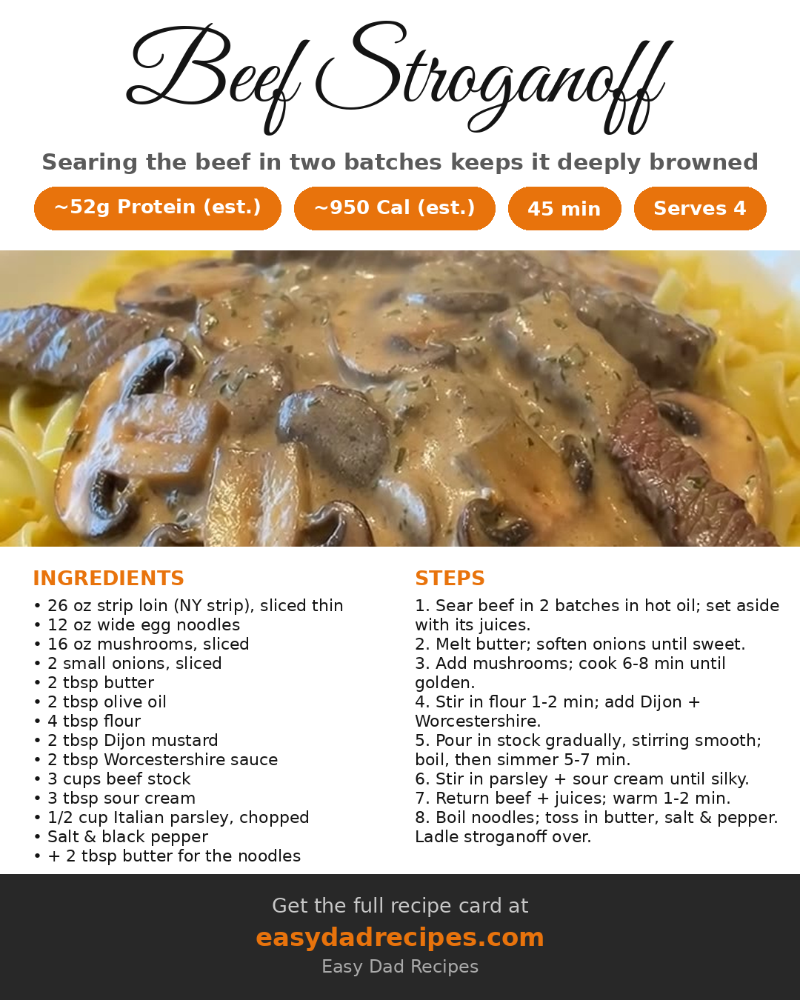

Beef Stroganoff
Some dinners never go out of style, and this is exhibit A. Thin strips of New York strip seared hard, a mushroom-and-onion sauce with Dijon and Worcestershire, a sour-cream finish that turns it silky — all ladled over buttered egg noodles. Steve at The Vivaldi Way laid it out in his Short, and the second I saw that sauce come together, it went straight on my list.
Why it works
The order is the whole trick. The beef sears in two batches so it actually browns instead of steaming, and it comes out of the pan before anything else happens — the sauce builds in the same skillet, right on top of the fond the steak left behind. Flour cooks into the onions and mushrooms as a quick roux, the stock goes in a little at a time so the sauce stays smooth, and the sour cream waits until the end so it melts in silky instead of breaking. The beef and every drop of its resting juices go back for just a minute or two to warm through, so it stays tender. And the protein is no joke — around fifty-two grams a serving by our math.
The recipe
Ingredients
- 26 oz strip loin steak (New York strip), sliced into thin strips
- 12 oz wide egg noodles
- 16 oz mushrooms, sliced
- 2 small onions, sliced
- 2 tbsp butter
- 2 tbsp olive oil
- 4 tbsp flour
- 2 tbsp Dijon mustard
- 2 tbsp Worcestershire sauce
- 3 cups beef stock
- 3 tbsp sour cream
- 1/2 cup chopped Italian parsley
- Salt and black pepper, to taste
- 2 tbsp butter, for the noodles
Steps
- Sear the beef: Heat the olive oil in a large stainless skillet over high heat until shimmering. Sear the beef strips in two batches, seasoning with salt and pepper, until deeply browned on both sides. Move the beef to a plate and keep every drop of the resting juices.
- Soften the onions: Melt the butter in the same pan over medium heat. Add the sliced onions with a pinch of salt and pepper and cook 4–5 minutes, until soft and sweet.
- Cook the mushrooms: Add the mushrooms, season lightly, and cook 6–8 minutes, until they release their liquid and turn golden.
- Build the roux: Sprinkle in the flour and stir for 1–2 minutes to cook out the raw taste. Stir in the Dijon mustard and Worcestershire sauce.
- Make the sauce: Pour in the beef stock a little at a time, stirring constantly to work out any lumps and deglaze the pan. Bring to a boil, then simmer 5–7 minutes, until the sauce thickens.
- Finish the sauce: Stir in the chopped parsley and the sour cream until the sauce turns silky and creamy. Taste and adjust the salt and pepper.
- Return the beef: Add the seared beef and all of its resting juices back to the pan and simmer 1–2 minutes, just until the beef is heated through and coated in the sauce.
- Noodles and serve: Meanwhile, boil the egg noodles until tender, drain, and toss with the butter, salt, and pepper so they stay glossy and loose. Serve the stroganoff ladled generously over the buttered noodles.
Here's the card — save it for next time:
Here's the card — save it for next time:

Want the printable version? Get it here: Beef Stroganoff
Credit: Steve | The Vivaldi Way (@SteveatVivaldi)
— Dad